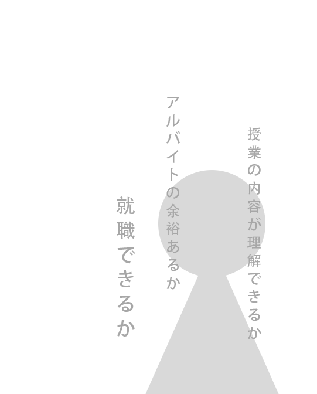
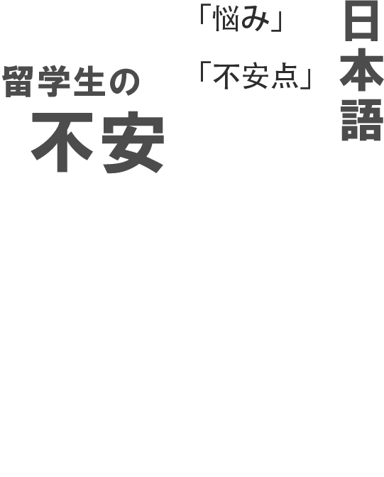
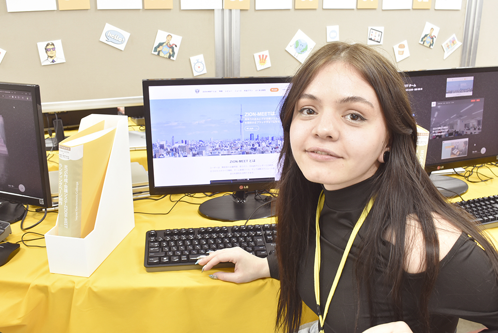
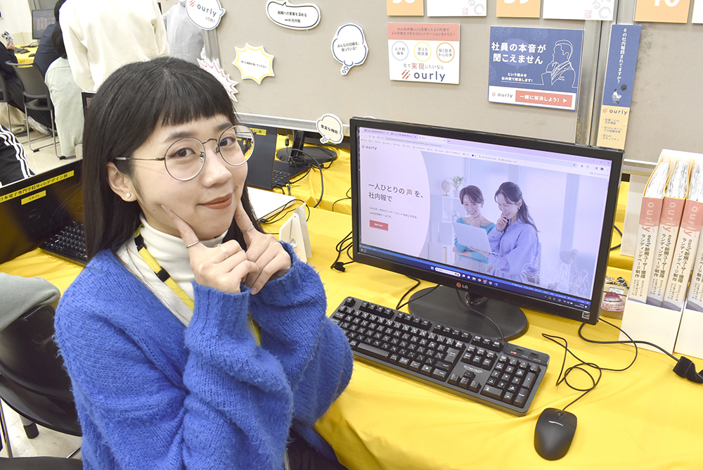
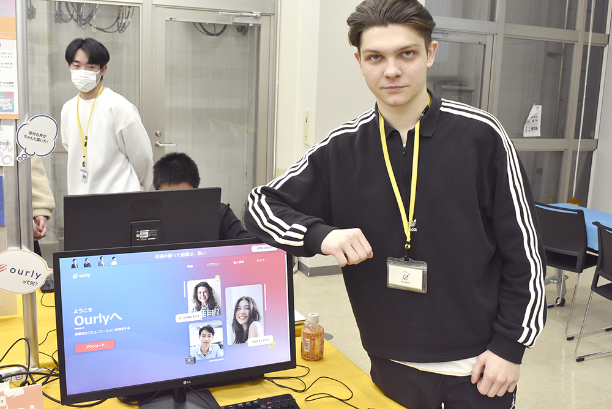

留学生がよくある不安
入学が決まった時嬉しさと期待でいっぱいでしたが、同時にいろいろな不安もありました。 自分が去年の今ごろ、いちばん不安だったのは、やっぱり日本語のレベルが授業についていけるかどうかという点でした。
JLPTに合格していても、それだけでは実際の授業が理解できるかどうかは分かりません。そのために先輩インタビューを用意しました。それを見ることで、入学前に自分の日本語力を見直すきっかけになれば安心につながると思います。


Webデザイン科のイメージ
クラスメンバーは、日本人と留学生が半分ずつ在籍しており、 多文化な学園生活が広がっています。
このような環境は、留学生にとっても日本人学生にとっても、新しい体験となるでしょう。 多文化の雰囲気の中で学ぶことは、専門的な知識だけでなく、さまざまな文化交流を通じて、 これまでにないユニークな学園生活を実現します。俺たちのリアルの学園生活を見てみよう！



支える環境
不安に対策
Webデザイン学科の学生育成
留学生が半数を占めているほか、高校を卒業してすぐに専門知識を ゼロから学び始める学生も多く在籍しています。そうした多様な学生が安心して学べるよう、 学習環境だけでなく、指導方法や教育体制にも工夫がされています。
実際の授業風景や学生の様子を見ていただければ、その工夫の一端が感じられるはずです。 その内容はぜひご自身の目で確かめてみてください。